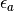
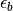
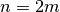
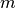
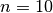
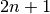
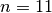

About¶
This is the primary site for the distribution of the python package chain_tb, from Charles Poli at Lancaster University.
Motivations¶
The chain_tb package models a one-dimensional tight-binding dimer chain with real and/or complex valued hoppings and onsite energies. Defects in the dimer chain can be introduced by locally modifying the on-site energies and/or the hoppings or, by changing the dimerization pattern i.e. switching the intradimer hopping with the interdimer hopping. In the case of zero onsite energies, the model can reproduce the Shockley [Sho39] and SSH [Su79] states. Note that these systems acquired recently a renewed interest considering complex onsites energies allowing to amplify the topologically protected midgap state [Sch13], [Pol15].
This package can then by useful to illustrate the concepts of:
Parity-Time symmetry and and Parity-Time symmetry breaking.
Sublattice symmetry breaking (for an odd number of sites), resulting in a mode of zero energy.
Localized states introduced by dimerization defects in the dimerization pattern.
Topologically protected states:
- Localized in one edge of dimer chain with alternating couplings and sublattice symmetry breaking, the Shokley state.
- Localized at the dimerization defect in a dimer chain with with alternating couplings and sublattice symmetry breaking, the so-called SSH model.
The chain is defined by:
- a unit cell composed of two sites labeled A and B:

Note
The chain starts with a A site.
two hoppings (with non zeros real parts), the intradimer coupling
 which links the A sites to the B sites, and the interdimer hopping
which links the A sites to the B sites, and the interdimer hopping  which links the B sites to the A sites.
which links the B sites to the A sites.two onsite energies  for the A sites, and  for the B sites.
For an even number of sites  the chain is composed of  unit cells.
For :
_ea0,5j_eb-0,5j/lattice.png)
For an odd number of sites  the chain is composed of
 unit cells plus an extra A site.
unit cells plus an extra A site.For :
_ea0,5j_eb-0,5j/lattice.png)
The defects implemented in the chain_tb package can:
- change locally the onsite energies
- change locally the hoppings
- introduce a defect in the dimerization pattern
The chain_tb package can:
- obtain the spectrum (eigenenergies of the tight-binding Hamiltonian) and the probability densities of the states of the system (absolute value squared eigenvectors of the Hamiltonian).
- obtain the polarization of the A sublattice (the sum of the probability densities of the A sites)
- select states by introducing a condition on the A sublattice polarization (revealing zero modes and/or localized states).
- test the robustness to disorder by implementing hopping disorder.
- get the time evolution of the field (using the Crank-Nicolson method).
- get the time evolution of the field with adiabatic pumping (smooth variation of the hoppings).
References¶
| [Sho39] | W. Shockley, On the surface states associated with a periodic potential. Phys. Rev. 56, 317 (1939) |
| [Su79] | W.P. Su, J.R. Schrieffer, and A.J. Heeger, Solitons in conducting polymers. Phys. Rev. Lett. 42, 1698 (1979). |
| [Sch13] | Schomerus, H. Topologically protected midgap states in complex photonic lattices. Opt. Lett. 38, 1912–1914 (2013). |
| [Pol15] | C. Poli, M. Bellec, U.Kuhl, F. Mortessagne, and H. Schomerus, Selective enhancement of topologically induced interface states in a dielectric resonator chain. Nat. Commun. 6 6710, (2015). |
Feedback¶
Please send comments or suggestions for improvement to cpoli83 at hotmail dot fr